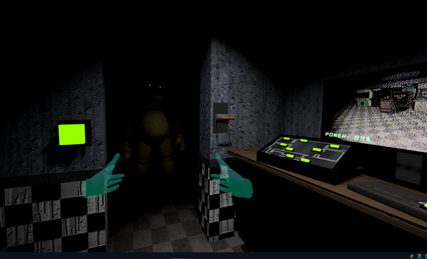
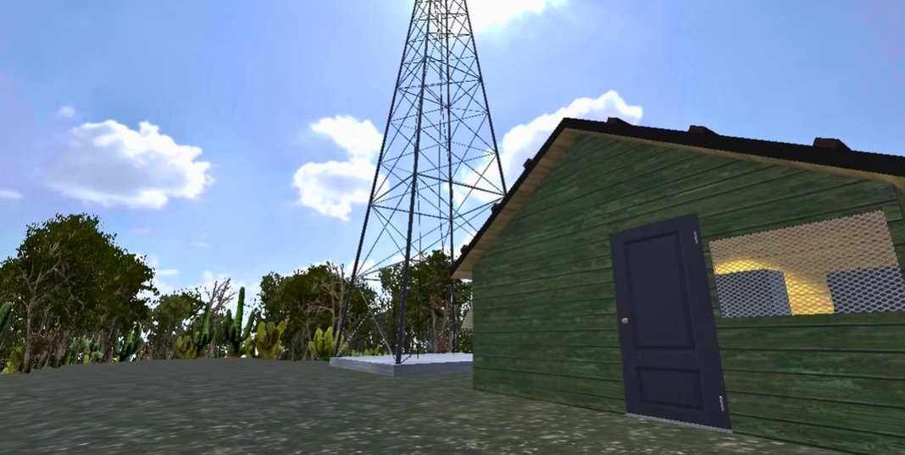
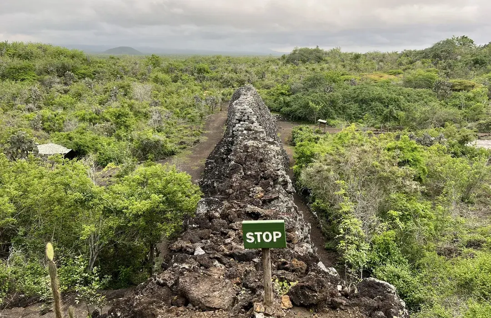
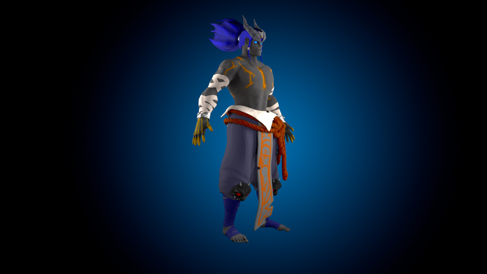
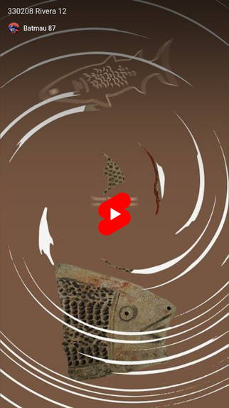

One Night at Fredbear’s
Experiencia de terror en Unity centrada en tensión, atmósfera psicológica y optimización para VR.
Portafolio de Mauricio Rivera, diseñador de medios interactivos con enfoque en experiencias digitales, realidad virtual, motion graphics y modelado 3D. El sitio presenta una selección de proyectos que combinan diseño, narrativa, técnica y exploración visual.


Proyecto académico desarrollado para el área de Arqueología de la Universidad San Francisco de Quito. La propuesta usa realidad virtual para divulgar el contexto histórico del Muro de Lágrimas en Isla Isabela, Galápagos, y traducir memoria histórica a una experiencia inmersiva y educativa.
Una muestra de proyectos tomados de tu portafolio, con sus imágenes independientes y texto adaptado del PDF.

Experiencia de terror en Unity centrada en tensión, atmósfera psicológica y optimización para VR.

Personaje 3D desarrollado con pipeline completo para videojuegos, desde ZBrush hasta Substance.

Serie de cortos en After Effects que convierten artefactos arqueológicos en piezas claras y narrativas.